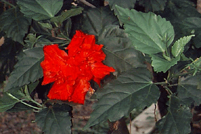
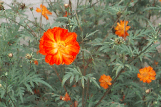
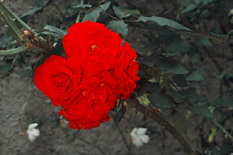

Você!
Ninguém tem um olhar
Igual ao teu!
Meigo, doce e quente...
Pois até o meu coração aqueceu!
Tão vivo e alegre igual aos teus olhos,
É o teu sorriso angelical,
Que, do meu viver, alivia,
A tristeza de um grande mal!
Olhar nos teus olhos brilhantes,
É como ver uma luz estimulante,
E ver os teus lábios sorridentes,
É realmente inebriante!
Sentir o calor das tuas mãos,
É algo muito vibrante!
Estar ao teu lado para sempre,
É um desejo constante!
Como se fosse um viajante,
De toda uma beleza infinita,
Com saudades vivo pensante,
De coisas ainda não vividas!
Quando terei a paz
Deste tormento violento,
Que me deixa incapaz
De pensar em você um sequer momento?
Pensar... Pensar... Pensar...!
Amar...! Amar...! Amar...!
Você ... Você... Você...
Só... estou a pensar!

Somente a Você amar!
Sentimento,
Pensamento,
E o vento,
São constantes...
A todo instante...
Incessantes!
Sentir,
Pensar,
Ou voar,
Tudo...
Leva ao mesmo lugar...
"Somente a Você amar!"

Passear com Você!
No parque ao passear,
Diante de tanta beleza sem par,
Senti Você me faltar.
Falei com os pássaros a voar,
Para um recado lhe dar,
Que, quando ao ver Você, cantar:
"Quero-a ao meu lado, ao passear,
E poder com Você falar,
Tua voz ouvir, e a tua beleza admirar!"
A flor fechada, abriu-se e pôs-se a falar:
"Ouvi seu recado, que para ela quero dar,
Não deixe de, agora mesmo me levar!"
"Mas, bela flor, aqui é o seu lugar,
Se eu te colher, sem te avisar,
De viver você irá parar!"
"Não faz mal, não poderei mesmo esperar,
Pois, morrerei antes dela aqui chegar,
E então, a ela, o recado não poderei dar!"
"E se, agora mesmo, Você me levar,
Com um pouco de vida, ainda posso chegar,
E o recado poderei lhe dar."
"E quando ela aqui chegar,
E ao, os pássaros, o recado lhe dar,
Também de mim ela irá lembrar!"
"E Você, de mim irá recordar,
E o meu perfume sentiras,
Aos seus lábios beijar!"
Poesia extraída do livro "Você! - Seus olhos, seu sorriso...", de Felipe Nicolau, edição 1.998
As flores foram fotografadas no jardim da casa da mãe do autor.
Adquira o livro: felipenicolau@felipenicolau.com.br
| VOLTAR | LIVRO 1 | LIVRO 2 |